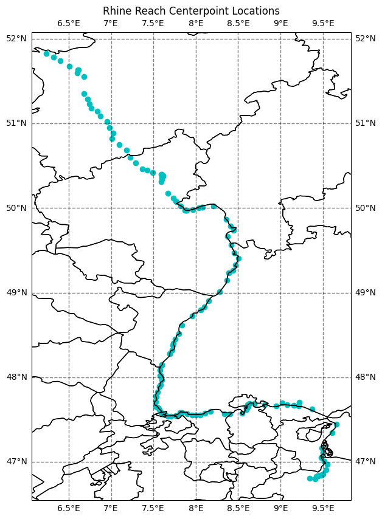
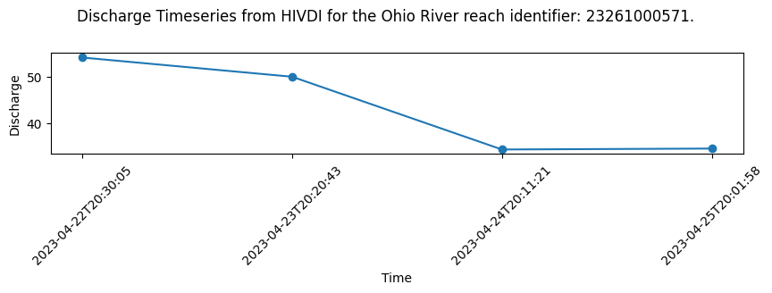
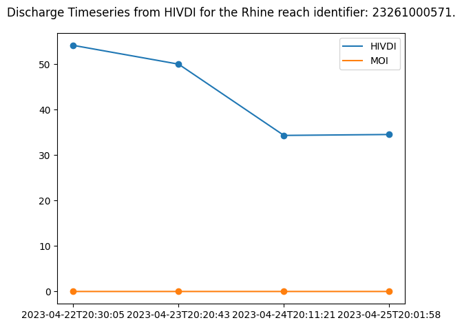

import datetime
import pathlib
import cartopy.crs as ccrs
import cartopy.feature as cfeature
from cartopy.mpl.gridliner import LONGITUDE_FORMATTER, LATITUDE_FORMATTER
import earthaccess
import matplotlib.pyplot as plt
import netCDF4 as nc
import numpy as np
import pandas as pdFrom the PO.DAAC Cookbook, to access the GitHub version of the notebook, follow this link.
Exploring river discharge in the SWORD of Science (SoS) dataset
Summary
The SWORD of Science (SoS) is a community-driven dataset produced for and from the execution of the Confluence workflow in the cloud which enables quick data access and compute on SWOT data. Data granules contain two files, priors and results. The priors file contains prior information, such as in-situ gage data and model output that is used to generate the discharge products. The results file contains the resulting river discharge data products.
The cloud-based workflow (“Confluence”) that produces the SoS will produce discharge parameter estimates which the SWOT mission will use to produce discharge. This discharge will be stored in the SWOT shapefiles as the official SWOT discharge. However, the Confluence workflow produces discharge time series alongside the discharge parameter estimates in order to preview what will eventually stored in the SWOT shapefiles. Users can reference the SoS for the latest discharge time series recognizing that the official SWOT discharge data product lives in the SWOT shapefiles.
The SoS is organized by continent following SWOT River Database (SWORD) structure and naming conventions. It is indexed on the same reach and node identifier dimensions found in SWORD. Time series data is stored by cycle and pass on an observation dimension.
More information is available in the SWOT-Confluence Github repository: * Documentation for priors * Documentation for results
Results are organized into groups corresponding to modules in the SWOT-Confluence processing software. Modules are described in the Confluence Module Documentation.
Table of Modules (Algorithms) and Discharge variables
The following lists the algorithms alongside their discharge variables and location in the SoS results file assuming that the SoS is an open file represented by the results variable.
The first six reference discharge time series for the flow law parameter estimate (FLPE) algorithms while the last six reference the Mean Optimization Integrator (MOI) results. The MOI uses a river topology to force mass conservation at confluences to produce a discharge time series for each reach-level FLPE.
| Module (Algorithm) | Discharge Variable | Location in the SoS |
|---|---|---|
| HiVDI | Q | results[“hivdi”][“Q”] |
| MetroMan | allq | results[“metroman”][“allq”] |
| MOMMA | Q | results[“momma”][“Q”] |
| neoBAM | q1, q2, or q3 | results[“neobam”][“q”][“q1”] |
| SAD | Qa | results[“sad”][“Qa”] |
| SIC4DVar | Q_da | results[“sic4dvar”][“Q_da”] |
| MOI HiVDI | q | results[“moi”][“hivdi”][“q”] |
| MOI MetroMan | q | results[“moi”][“metroman”][“q”] |
| MOI MOMMA | q | results[“moi”][“momma”][“q”] |
| MOI neoBAM | q | results[“moi”][“qeobam”][“q”] |
| MOI SAD | q | results[“moi”][“sad”][“q”] |
| MOI SIC4DVar | q | results[“moi”][“sic4dvar”][“q”] |
Requirements
1. Compute environment
This tutorial can be run in the following environments: - Local compute environment e.g. laptop, server: this tutorial can be run on your local machine
2. Earthdata Login
An Earthdata Login account is required to access data, as well as discover restricted data, from the NASA Earthdata system. Thus, to access NASA data, you need Earthdata Login. Please visit https://urs.earthdata.nasa.gov to register and manage your Earthdata Login account. This account is free to create and only takes a moment to set up.
Learning Objectives
- To explore and begin to understand the structure of the SoS.
- To locate and plot river discharge.
Import Packages
Authenticate
Authenticate your Earthdata Login (EDL) information using the earthaccess python package as follows:
earthaccess.login() # Login with your EDL credentials if asked<earthaccess.auth.Auth at 0x16aa132c0>Search and Access SoS data
Locate the SoS data of interest and then download for access.
# Search and locate granules
granule_info = earthaccess.search_data(
short_name="SWOT_L4_DAWG_SOS_DISCHARGE",
temporal=("2023-04-07", "2023-04-26"),
)
granule_infoGranules found: 3[Collection: {'Version': '1', 'ShortName': 'SWOT_L4_DAWG_SOS_DISCHARGE'}
Spatial coverage: {'HorizontalSpatialDomain': {'Geometry': {'BoundingRectangles': [{'WestBoundingCoordinate': -21.794, 'SouthBoundingCoordinate': 25.382, 'EastBoundingCoordinate': 25.382, 'NorthBoundingCoordinate': 81.115}]}}}
Temporal coverage: {'RangeDateTime': {'EndingDateTime': '2023-04-25T20:01:59.000Z', 'BeginningDateTime': '2023-04-07T22:49:35.000Z'}}
Size(MB): 983.0999364852905
Data: ['https://archive.podaac.earthdata.nasa.gov/podaac-ops-cumulus-protected/SWOT_L4_DAWG_SOS_DISCHARGE/eu_sword_v15_SOS_unconstrained_0001_20240228T205029_results.nc', 'https://archive.podaac.earthdata.nasa.gov/podaac-ops-cumulus-protected/SWOT_L4_DAWG_SOS_DISCHARGE/eu_sword_v15_SOS_unconstrained_0001_20240228T205029_priors.nc'],
Collection: {'Version': '1', 'ShortName': 'SWOT_L4_DAWG_SOS_DISCHARGE'}
Spatial coverage: {'HorizontalSpatialDomain': {'Geometry': {'BoundingRectangles': [{'WestBoundingCoordinate': -81.139, 'SouthBoundingCoordinate': -52, 'EastBoundingCoordinate': -52, 'NorthBoundingCoordinate': 11.097}]}}}
Temporal coverage: {'RangeDateTime': {'EndingDateTime': '2023-04-26T12:04:55.000Z', 'BeginningDateTime': '2023-04-08T01:51:07.000Z'}}
Size(MB): 1700.4334163665771
Data: ['https://archive.podaac.earthdata.nasa.gov/podaac-ops-cumulus-protected/SWOT_L4_DAWG_SOS_DISCHARGE/sa_sword_v15_SOS_unconstrained_0001_20240228T205034_results.nc', 'https://archive.podaac.earthdata.nasa.gov/podaac-ops-cumulus-protected/SWOT_L4_DAWG_SOS_DISCHARGE/sa_sword_v15_SOS_unconstrained_0001_20240228T205034_priors.nc'],
Collection: {'Version': '1', 'ShortName': 'SWOT_L4_DAWG_SOS_DISCHARGE'}
Spatial coverage: {'HorizontalSpatialDomain': {'Geometry': {'BoundingRectangles': [{'WestBoundingCoordinate': -166.397, 'SouthBoundingCoordinate': 8.09, 'EastBoundingCoordinate': 8.09, 'NorthBoundingCoordinate': 82.311}]}}}
Temporal coverage: {'RangeDateTime': {'EndingDateTime': '2023-04-26T13:28:35.000Z', 'BeginningDateTime': '2023-04-08T05:36:12.000Z'}}
Size(MB): 1613.2776679992676
Data: ['https://archive.podaac.earthdata.nasa.gov/podaac-ops-cumulus-protected/SWOT_L4_DAWG_SOS_DISCHARGE/na_sword_v15_SOS_unconstrained_0001_20240228T205032_results.nc', 'https://archive.podaac.earthdata.nasa.gov/podaac-ops-cumulus-protected/SWOT_L4_DAWG_SOS_DISCHARGE/na_sword_v15_SOS_unconstrained_0001_20240228T205032_priors.nc']]# Enter a directory path to store downloaded data in
downloads_dir = pathlib.Path("data_downloads")
downloads_dir.mkdir(parents=True, exist_ok=True)
# Select a priors and results pair to explore
download_links = [[link for link in earthaccess.results.DataGranule.data_links(granule)] for granule in granule_info]
print("Select a priors and results file to explore:")
for downloads in download_links:
for download in downloads:
if "priors" in download: print(download)Select a priors and results file to explore:
https://archive.podaac.earthdata.nasa.gov/podaac-ops-cumulus-protected/SWOT_L4_DAWG_SOS_DISCHARGE/eu_sword_v15_SOS_unconstrained_0001_20240228T205029_priors.nc
https://archive.podaac.earthdata.nasa.gov/podaac-ops-cumulus-protected/SWOT_L4_DAWG_SOS_DISCHARGE/sa_sword_v15_SOS_unconstrained_0001_20240228T205034_priors.nc
https://archive.podaac.earthdata.nasa.gov/podaac-ops-cumulus-protected/SWOT_L4_DAWG_SOS_DISCHARGE/na_sword_v15_SOS_unconstrained_0001_20240228T205032_priors.nc# Select Europe ("eu") priors file to work with
priors_link = "https://archive.podaac.earthdata.nasa.gov/podaac-ops-cumulus-protected/SWOT_L4_DAWG_SOS_DISCHARGE/eu_sword_v15_SOS_unconstrained_0001_20240228T205029_priors.nc"
# Select results
results_link = priors_link.replace("priors", "results")
earthaccess.download(priors_link, downloads_dir)
earthaccess.download(results_link, downloads_dir)File eu_sword_v15_SOS_unconstrained_0001_20240228T205029_priors.nc already downloadedFile eu_sword_v15_SOS_unconstrained_0001_20240228T205029_results.nc already downloaded['data_downloads/eu_sword_v15_SOS_unconstrained_0001_20240228T205029_results.nc']# Open downloaded files to access SoS granule data
priors_download = priors_link.split('/')[-1]
results_download = results_link.split('/')[-1]
priors = nc.Dataset(downloads_dir.joinpath(priors_download), format="NETCDF4")
results = nc.Dataset(downloads_dir.joinpath(results_download), format="NETCDF4")Explore the SoS
We can now explore the SoS using either the data read directly from S3 or downloaded to your local computer.
# Constants
# Select a river
RIVER_NAME = "Rhine"
# Select a discharge algorithm (hivdi, neobam, metroman, momma, sad, sic4dvar)
DISCHARGE_ALGORITHM = "hivdi"
DISCHARGE_VARIABLE = "Q"# Display the priors groups
print("Priors Groups:")
print(priors.groups)Priors Groups:
{'reaches': <class 'netCDF4._netCDF4.Group'>
group /reaches:
dimensions(sizes):
variables(dimensions): int64 reach_id(num_reaches), float64 x(num_reaches), float64 y(num_reaches), <class 'str'> river_name(num_reaches)
groups: , 'nodes': <class 'netCDF4._netCDF4.Group'>
group /nodes:
dimensions(sizes):
variables(dimensions): int64 node_id(num_nodes), int64 reach_id(num_nodes), float64 x(num_nodes), float64 y(num_nodes), <class 'str'> river_name(num_nodes)
groups: , 'model': <class 'netCDF4._netCDF4.Group'>
group /model:
dimensions(sizes): num_months(12), probability(20)
variables(dimensions): int32 num_months(num_months), int32 probability(probability), float64 flow_duration_q(num_reaches, probability), float64 max_q(num_reaches), float64 monthly_q(num_reaches, num_months), float64 mean_q(num_reaches), float64 min_q(num_reaches), float64 two_year_return_q(num_reaches), int32 area_estimate_flag(num_reaches)
groups: , 'gbpriors': <class 'netCDF4._netCDF4.Group'>
group /gbpriors:
dimensions(sizes):
variables(dimensions):
groups: reach, node, 'EAU': <class 'netCDF4._netCDF4.Group'>
group /EAU:
dimensions(sizes): num_days(16130), num_months(12), probability(20), nchars(100), num_EAU_reaches(243)
variables(dimensions): int32 num_days(num_days), int32 CAL(num_EAU_reaches), int32 EAU_reaches(num_EAU_reaches), int64 EAU_reach_id(num_EAU_reaches), float64 EAU_flow_duration_q(num_EAU_reaches, probability), float64 EAU_max_q(num_EAU_reaches), float64 EAU_monthly_q(num_EAU_reaches, num_months), float64 EAU_mean_q(num_EAU_reaches), float64 EAU_min_q(num_EAU_reaches), float64 EAU_two_year_return_q(num_EAU_reaches), |S1 EAU_id(num_EAU_reaches, nchars), float64 EAU_q(num_EAU_reaches, num_days), float64 EAU_qt(num_EAU_reaches, num_days)
groups: , 'DEFRA': <class 'netCDF4._netCDF4.Group'>
group /DEFRA:
dimensions(sizes): num_days(16130), num_months(12), probability(20), nchars(100), num_DEFRA_reaches(26)
variables(dimensions): int32 num_days(num_days), int32 CAL(num_DEFRA_reaches), int32 DEFRA_reaches(num_DEFRA_reaches), int64 DEFRA_reach_id(num_DEFRA_reaches), float64 DEFRA_flow_duration_q(num_DEFRA_reaches, probability), float64 DEFRA_max_q(num_DEFRA_reaches), float64 DEFRA_monthly_q(num_DEFRA_reaches, num_months), float64 DEFRA_mean_q(num_DEFRA_reaches), float64 DEFRA_min_q(num_DEFRA_reaches), float64 DEFRA_two_year_return_q(num_DEFRA_reaches), |S1 DEFRA_id(num_DEFRA_reaches, nchars), float64 DEFRA_q(num_DEFRA_reaches, num_days), float64 DEFRA_qt(num_DEFRA_reaches, num_days)
groups: }# Display the module groups
print("Results Groups:")
print(results.groups)Results Groups:
{'reaches': <class 'netCDF4._netCDF4.Group'>
group /reaches:
dimensions(sizes):
variables(dimensions): int64 reach_id(num_reaches), float64 x(num_reaches), float64 y(num_reaches), <class 'str'> river_name(num_reaches), int32 observations(num_reaches), float64 time(num_reaches)
groups: , 'nodes': <class 'netCDF4._netCDF4.Group'>
group /nodes:
dimensions(sizes):
variables(dimensions): int64 node_id(num_nodes), int64 reach_id(num_nodes), float64 x(num_nodes), float64 y(num_nodes), <class 'str'> river_name(num_nodes), int32 observations(num_nodes), float64 time(num_nodes)
groups: , 'hivdi': <class 'netCDF4._netCDF4.Group'>
group /hivdi:
dimensions(sizes):
variables(dimensions): float64 Q(num_reaches), float64 A0(num_reaches), float64 beta(num_reaches), float64 alpha(num_reaches)
groups: , 'metroman': <class 'netCDF4._netCDF4.Group'>
group /metroman:
dimensions(sizes):
variables(dimensions): float64 allq(num_reaches), float64 A0hat(num_reaches), float64 nahat(num_reaches), float64 x1hat(num_reaches), float64 q_u(num_reaches)
groups: , 'moi': <class 'netCDF4._netCDF4.Group'>
group /moi:
dimensions(sizes):
variables(dimensions):
groups: geobam, hivdi, metroman, momma, sad, sic4dvar, 'momma': <class 'netCDF4._netCDF4.Group'>
group /momma:
dimensions(sizes):
variables(dimensions): float64 stage(num_reaches), float64 width(num_reaches), float64 slope(num_reaches), float64 Qgage(num_reaches), float64 seg(num_reaches), float64 n(num_reaches), float64 Y(num_reaches), float64 v(num_reaches), float64 Q(num_reaches), float64 Q_constrained(num_reaches), float64 gage_constrained(num_reaches), float64 input_Qm_prior(num_reaches), float64 input_Qb_prior(num_reaches), float64 input_Yb_prior(num_reaches), float64 input_known_ezf(num_reaches), float64 input_known_bkfl_stage(num_reaches), float64 input_known_nb_seg1(num_reaches), float64 input_known_x_seg1(num_reaches), float64 Qgage_constrained_nb_seg1(num_reaches), float64 Qgage_constrained_x_seg1(num_reaches), float64 input_known_nb_seg2(num_reaches), float64 input_known_x_seg2(num_reaches), float64 Qgage_constrained_nb_seg2(num_reaches), float64 Qgage_constrained_x_seg2(num_reaches), float64 n_bkfl_Qb_prior(num_reaches), float64 n_bkfl_slope(num_reaches), float64 vel_bkfl_Qb_prior(num_reaches), float64 Froude_bkfl_diag_Smean(num_reaches), float64 width_bkfl_solved_obs(num_reaches), float64 depth_bkfl_solved_obs(num_reaches), float64 depth_bkfl_diag_Wb_Smean(num_reaches), float64 zero_flow_stage(num_reaches), float64 bankfull_stage(num_reaches), float64 Qmean_prior(num_reaches), float64 Qmean_momma(num_reaches), float64 Qmean_momma.constrained(num_reaches), float64 width_stage_corr(num_reaches)
groups: , 'neobam': <class 'netCDF4._netCDF4.Group'>
group /neobam:
dimensions(sizes):
variables(dimensions):
groups: r, logn, logDb, logWb, q, 'offline': <class 'netCDF4._netCDF4.Group'>
group /offline:
dimensions(sizes):
variables(dimensions): float64 d_x_area(num_reaches), float64 d_x_area_u(num_reaches), float64 metro_q_c(num_reaches), float64 bam_q_c(num_reaches), float64 hivdi_q_c(num_reaches), float64 momma_q_c(num_reaches), float64 sads_q_c(num_reaches), float64 consensus_q_c(num_reaches), float64 metro_q_uc(num_reaches), float64 bam_q_uc(num_reaches), float64 hivdi_q_uc(num_reaches), float64 momma_q_uc(num_reaches), float64 sads_q_uc(num_reaches), float64 consensus_q_uc(num_reaches)
groups: , 'postdiagnostics': <class 'netCDF4._netCDF4.Group'>
group /postdiagnostics:
dimensions(sizes): nchar(10)
variables(dimensions):
groups: basin, reach, 'prediagnostics': <class 'netCDF4._netCDF4.Group'>
group /prediagnostics:
dimensions(sizes):
variables(dimensions):
groups: reach, node, 'sad': <class 'netCDF4._netCDF4.Group'>
group /sad:
dimensions(sizes):
variables(dimensions): float64 A0(num_reaches), float64 n(num_reaches), float64 Qa(num_reaches), float64 Q_u(num_reaches)
groups: , 'sic4dvar': <class 'netCDF4._netCDF4.Group'>
group /sic4dvar:
dimensions(sizes):
variables(dimensions): float64 A0(num_reaches), float64 n(num_reaches), float64 Q_mm(num_reaches), float64 Q_da(num_reaches)
groups: , 'validation': <class 'netCDF4._netCDF4.Group'>
group /validation:
dimensions(sizes): num_algos(14), nchar(16)
variables(dimensions): |S1 algo_names(num_reaches, num_algos, nchar), int32 has_validation(num_reaches), float64 nse(num_reaches, num_algos), float64 rsq(num_reaches, num_algos), float64 kge(num_reaches, num_algos), float64 rmse(num_reaches, num_algos), float64 testn(num_reaches, num_algos), float64 nrmse(num_reaches, num_algos), float64 nbias(num_reaches, num_algos), float64 rrmse(num_reaches, num_algos)
groups: }Plot river reach locations
Information about the spatial location of river reaches is in the reaches and nodes groups including river names. This data is taken directly from SWOT River Database (SWORD).
reaches = results.groups['reaches'] # Access the reaches group
print("Reaches Group")
print(reaches, "\n")
print("Longitude")
print(reaches.variables['x'])Reaches Group
<class 'netCDF4._netCDF4.Group'>
group /reaches:
dimensions(sizes):
variables(dimensions): int64 reach_id(num_reaches), float64 x(num_reaches), float64 y(num_reaches), <class 'str'> river_name(num_reaches), int32 observations(num_reaches), float64 time(num_reaches)
groups:
Longitude
<class 'netCDF4._netCDF4.Variable'>
float64 x(num_reaches)
long_name: longitude
comment: longitude of the reach center decimal ranging from 180°E to 180°W
units: degrees_east
valid_min: -180.0
valid_max: 180.0
coverage_content_type: coordinate
path = /reaches
unlimited dimensions:
current shape = (30768,)
filling on, default _FillValue of 9.969209968386869e+36 used# Unpack the spatial coordinates and river names
reach_lon = results.groups['reaches'].variables['x']
reach_lat = results.groups['reaches'].variables['y']
river_names = results.groups['reaches'].variables['river_name']
# Filter data to only find the river of interest
idx = np.where(river_names[:] == RIVER_NAME)
print(f"Indexes for {RIVER_NAME}:\n {idx}")Indexes for Rhine:
(array([12597, 12598, 12599, 12600, 12601, 12602, 12603, 12606, 12616,
12617, 12618, 12619, 12620, 12621, 12622, 12623, 12624, 12625,
12626, 12627, 12628, 12629, 12630, 12631, 12634, 12635, 12636,
12638, 12639, 12640, 12769, 12918, 12919, 12920, 12923, 12924,
12925, 12926, 12931, 12932, 12933, 12938, 12939, 12940, 12941,
12942, 12943, 12944, 13098, 13099, 13100, 13101, 13102, 13152,
13153, 13154, 13155, 13156, 13157, 13158, 13159, 13160, 13161,
13162, 13163, 13164, 13165, 13166, 13168, 13169, 13170, 13172,
13173, 13174, 13175, 13176, 13177, 13178, 13179, 13180, 13181,
13182, 13183, 13184, 13185, 13186, 13187, 13188, 13189, 13190,
13191, 13192, 13193, 13194, 13195, 13196, 13197, 13198, 13199,
13200, 13201, 13202, 13204, 13205, 13206, 13207, 13208, 13316,
13317, 13319, 13324, 13325, 13326, 13327, 13328, 13329, 13330,
13331, 13332, 13333, 13334, 13335, 13336, 13337, 13339, 13340,
13341, 13342, 13343, 13345, 13346, 13362, 13363, 13364, 13365,
13366, 13367, 13368, 13369, 13370, 13371, 13372, 13373, 13374,
13375, 13385]),)# Plot the location of the river
fig = plt.figure(figsize=(10,10))
# Add map elements gridlines
ax = plt.axes(projection=ccrs.PlateCarree())
ax.coastlines()
ax.add_feature(cfeature.STATES, edgecolor='black')
gl = ax.gridlines(crs=ccrs.PlateCarree(), linewidth=1, color='black', alpha=0.5, linestyle='--', draw_labels=True)
gl.xlabels_top = False
gl.ylabels_left = True
gl.ylabels_right=False
gl.xlines = True
gl.xformatter = LONGITUDE_FORMATTER
gl.yformatter = LATITUDE_FORMATTER
# Plot the river reach centerpoint locations
ax.scatter(reach_lon[idx], y=reach_lat[idx], color='c')
# Add the title
plt.title(f'{RIVER_NAME} Reach Centerpoint Locations')Text(0.5, 1.0, 'Rhine Reach Centerpoint Locations')
Plot Discharge Timeseries
The main data of interest in the results files is the timeseries of river discharge (q) estimates produced by each module. The SoS is a global dataset organized by continents and not every reach will have an associated discharge for each module. So it is helpful to filter out missing values in order to isolate and visualize discharge for the various modules.
How to locate data amongst missing values
You can use the missing_value NetCDF variable attribute to locate the value used to indicate missing data. You can then filter on that value to isolate the time steps with discharge estimates. The following example uses the HiVDI algorithm results to demonstrate filtering missing values and plotting discharge.
# Retrieve discharge from discharge algorithm group
discharge_algo_q = results[DISCHARGE_ALGORITHM][DISCHARGE_VARIABLE][:]
# Save the missing value
missing = results[DISCHARGE_ALGORITHM][DISCHARGE_VARIABLE].missing_value
# Loop through each reach and filter out places where the missing value is present
data_indexes = []
for i in range(discharge_algo_q.shape[0]):
if discharge_algo_q[i].shape[0] > 1:
if np.any(discharge_algo_q[i] != missing): data_indexes.append(i) # For multiple time steps with non-missing values
if discharge_algo_q[i].shape[0] == 1 and discharge_algo_q[i] != missing: data_indexes.append(i) # For one time step with non-missing value
# Display the numeric indexes where discharge data is present
print(f"10 indexes for locations that have values:\n {data_indexes[:10]}")10 indexes for locations that have values:
[12635, 12636, 12639, 12769, 12773, 12919, 12922, 12925, 12930, 12931]reach_identifiers = results['reaches']['reach_id'][data_indexes]
print(f"10 reach identifiers for locations that have values:\n {reach_identifiers[:10]}")10 reach identifiers for locations that have values:
[23261000571 23261000581 23261000631 23262000011 23262000051 23263000021
23263000051 23263000081 23263000131 23263000141]You can now use the data indexes to retrieve location, time, and river name data about the reaches that have discharge data.
# Review what river names are present in the data
print("10 River Names")
print(river_names[data_indexes[:10]])
river_indexes = np.where(river_names == RIVER_NAME)
print(f"\nIndexes for the {RIVER_NAME}")
print(river_indexes)
# Locate overlap
overlap_indexes = np.intersect1d(data_indexes, river_indexes)
print(f"\nOverlapping indexes for the {RIVER_NAME} with {DISCHARGE_ALGORITHM.upper()} Discharge data")
print(overlap_indexes)10 River Names
['Rhine' 'Rhine' 'Rhine' 'Rhine' 'Mosel' 'Rhine' 'Lahn; Rhine' 'Rhine'
'Lahn' 'Rhine']
Indexes for the Rhine
(array([12597, 12598, 12599, 12600, 12601, 12602, 12603, 12606, 12616,
12617, 12618, 12619, 12620, 12621, 12622, 12623, 12624, 12625,
12626, 12627, 12628, 12629, 12630, 12631, 12634, 12635, 12636,
12638, 12639, 12640, 12769, 12918, 12919, 12920, 12923, 12924,
12925, 12926, 12931, 12932, 12933, 12938, 12939, 12940, 12941,
12942, 12943, 12944, 13098, 13099, 13100, 13101, 13102, 13152,
13153, 13154, 13155, 13156, 13157, 13158, 13159, 13160, 13161,
13162, 13163, 13164, 13165, 13166, 13168, 13169, 13170, 13172,
13173, 13174, 13175, 13176, 13177, 13178, 13179, 13180, 13181,
13182, 13183, 13184, 13185, 13186, 13187, 13188, 13189, 13190,
13191, 13192, 13193, 13194, 13195, 13196, 13197, 13198, 13199,
13200, 13201, 13202, 13204, 13205, 13206, 13207, 13208, 13316,
13317, 13319, 13324, 13325, 13326, 13327, 13328, 13329, 13330,
13331, 13332, 13333, 13334, 13335, 13336, 13337, 13339, 13340,
13341, 13342, 13343, 13345, 13346, 13362, 13363, 13364, 13365,
13366, 13367, 13368, 13369, 13370, 13371, 13372, 13373, 13374,
13375, 13385]),)
Overlapping indexes for the Rhine with HIVDI Discharge data
[12635 12636 12639 12769 12919 12925 12931 12932 12933 12938 12939 12940
12941 12942 12943 13098 13099 13100 13101 13102 13152 13153 13154 13155
13156 13157 13158 13159 13161 13162 13163 13164 13165 13168 13169 13174
13178 13180 13181 13189 13190 13191 13193 13195 13197 13207]# Select the first reach from the overlapping indexes
data_index = overlap_indexes[0]
# Locate the reach identifier
reach_id = reaches['reach_id'][data_index]
print(f"{RIVER_NAME} reach identifier to plot: {reach_id}")
# Retrieve discharge
discharge_algo_q = discharge_algo_q[data_index]
print(f"\nDischarge for {RIVER_NAME} reach identifier # {reach_id}")
print(discharge_algo_q)
# Retrieve time
time = results['reaches']['time'][data_index]
print(f"\nTime for {RIVER_NAME} reach identifier # {reach_id}")
print(results['reaches']['time'][data_index])Rhine reach identifier to plot: 23261000571
Discharge for Rhine reach identifier # 23261000571
[-1.00000000e+12 -1.00000000e+12 -1.00000000e+12 -1.00000000e+12
-1.00000000e+12 -1.00000000e+12 -1.00000000e+12 -1.00000000e+12
-1.00000000e+12 5.40782194e+01 4.99487494e+01 3.42913882e+01
3.44913537e+01]
Time for Rhine reach identifier # 23261000571
[7.34223036e+08 7.34308874e+08 7.34394712e+08 7.34909740e+08
7.34995578e+08 7.35081416e+08 7.35167254e+08 7.35253092e+08
7.35338929e+08 7.35510605e+08 7.35596443e+08 7.35682281e+08
7.35768119e+08]# Transform time to correct format
swot_ts = datetime.datetime(2000,1,1,0,0,0)
missing_time = results['reaches']['time'].missing_value
time_str = []
for t in time:
if t == missing_time:
time_str.append('NO_DATA')
else:
time_str.append((swot_ts + datetime.timedelta(seconds=t)).strftime('%Y-%m-%dT%H:%M:%S'))
time_str = np.array(time_str)
print(f"Formatted time: {time_str}")Formatted time: ['2023-04-07T22:50:35' '2023-04-08T22:41:13' '2023-04-09T22:31:52'
'2023-04-15T21:35:40' '2023-04-16T21:26:18' '2023-04-17T21:16:56'
'2023-04-18T21:07:33' '2023-04-19T20:58:11' '2023-04-20T20:48:49'
'2023-04-22T20:30:05' '2023-04-23T20:20:43' '2023-04-24T20:11:21'
'2023-04-25T20:01:58']# Filter any missing values out of reach identifier discharge and time
missing_reach_index = np.where(discharge_algo_q != missing)
discharge_algo_q = discharge_algo_q[missing_reach_index]
print(f"Discharge for {RIVER_NAME} reach identfier # {reach_id}")
print(discharge_algo_q)
time_str = time_str[missing_reach_index]
print(f"\nTime for {RIVER_NAME} reach identfier # {reach_id}")
print(time_str)Discharge for Rhine reach identfier # 23261000571
[54.07821944 49.94874936 34.29138816 34.49135369]
Time for Rhine reach identfier # 23261000571
['2023-04-22T20:30:05' '2023-04-23T20:20:43' '2023-04-24T20:11:21'
'2023-04-25T20:01:58']# Plot Discharge for the River Reach Identifier
# Set up plot
fig = plt.figure(figsize=(10,5))
ax1 = plt.subplot(311)
# Plot data
ax1.scatter(time_str, discharge_algo_q)
ax1.plot(time_str, discharge_algo_q)
# Define labels and title
ax1.set_ylabel('Discharge')
ax1.set_xlabel('Time')
plt.xticks(rotation = 45)
plt.suptitle(f"Discharge Timeseries from HIVDI for the Ohio River reach identifier: {reach_id}.")Text(0.5, 0.98, 'Discharge Timeseries from HIVDI for the Ohio River reach identifier: 23261000571.')
Plotting integrator results for comparison
The SoS contains reach-level Flow Law Parameter (FLPE) algorithms: HiVDI, neoBAM, MetroMan, MOMMA, SAD, SIC4DVar that produce discharge estimates using SWOT observations, SoS Priors and SWORD data. It can be helpful to compare the reach-level FLPEs to the discharge values produced by the Mean Optimization Integrator (MOI). The MOI takes SWOT observation data and reach-level FLPE output and integrates the results. It uses river topology to force mass conservation and also defined uncertainty.
# Locate MOI discharge results for discharge algorithm making sure to filter out missing values
moi_q = results["moi"][DISCHARGE_ALGORITHM]["q"][data_index]
moi_q = moi_q[missing_reach_index]
print(f"{DISCHARGE_ALGORITHM.upper()} MOI Discharge for {RIVER_NAME} reach identfier # {reach_id}")
print(moi_q)HIVDI MOI Discharge for Rhine reach identfier # 23261000571
[0.0009796 0.00062748 0.00012596 0.00014881]# Plot discharge algorithm alongside MOI discharge
# Discharge algorithm Q
plt.scatter(time_str, discharge_algo_q)
plt.plot(time_str, discharge_algo_q, label=f"{DISCHARGE_ALGORITHM.upper()}")
# MOI Q
plt.scatter(time_str, moi_q)
plt.plot(time_str, moi_q, label="MOI")
plt.suptitle(f"Discharge Timeseries from HIVDI for the {RIVER_NAME} reach identifier: {reach_id}.")
plt.legend()
plt.tight_layout()
Close dataset and file handler references
priors.close()
results.close()Disclaimer: Reference herein to any specific commercial product, process, or service by trade name, trademark, manufacturer, or otherwise, does not constitute or imply its endorsement by the United States Government or the Jet Propulsion Laboratory, California Institute of Technology.